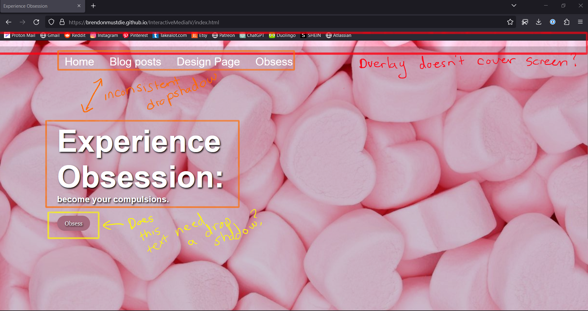
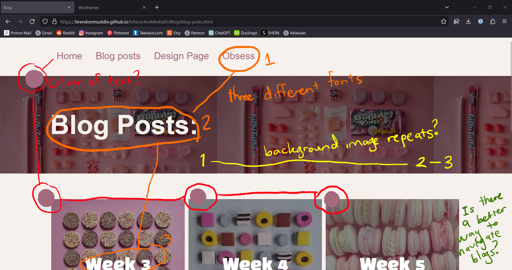
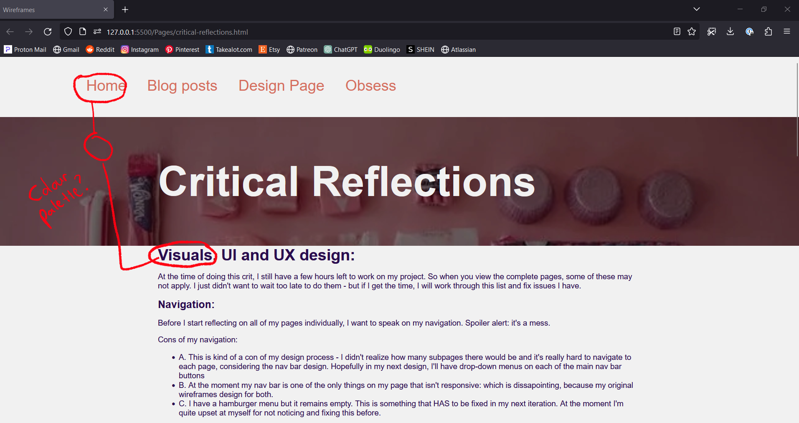

Visuals, UI and UX design:
At the time of doing this crit, I still have a few hours left to work on
my project. So when you view the complete pages, some of these may not
apply. I just didn't want to wait too late to do them - but if I get the
time, I will work through this list and fix issues I have.
Navigation:
Before I start reflecting on all of my pages individually, I want to
speak on my navigation. Spoiler alert: it's a mess.
Cons of my navigation:
-
A. This is kind of a con of my design process - I didn't realize how
many subpages there would be and it's really hard to navigate to each
page, considering the nav bar design. Hopefully in my next design,
I'll have drop-down menus on each of the main nav bar buttons
-
B. At the moment my nav bar is one of the only things on my page that
isn't responsive: which is dissapointing, because my original
wireframes design for both.
-
C. I have a hamburger menu but it remains empty. This is something
that HAS to be fixed in my next iteration. At the moment I'm quite
upset at myself for not noticing and fixing this before.
Colour Palette:
I also want to talk a little bit about my colour palette: I decided to
really challenge myself with this project.
I know that using feminine colours makes it hard to convey
professionalism (hello, misogyny) and as a genderqueer individual, I
face a deep fear of femininity (hello again, misogyny) but I thought
this could be fun and an interesting way to explore femininity and force
it into professionalism.
Home Page

Cons of my homepage:
-
A. For some reason, in using CSS this overlay doesn't cover the entire
background. I just never got around to fixing it. It makes the entire
page look untidy and unfinished.
-
B. The reason my nav bar isn't dropshadow-ed and my main font is, was
to bring attention to the main text. But it adds to the overall
messiness of the page. It contributes in making the page feel
unprofessional and I should have picked a team.
-
C. The button has a dropshadow? Even though the nav-bar text doesn't -
it's just another lack of consistence.
-
D. Another issue I have is the different fonts. The nav-bar and the
obsess button should have the same font, just for consistency.
-
E. Overall, I'm concerned that my background image doesn't share the
visual narrative that I would like it to.
Pros of my homepage:
-
A. I use conventions to make my navbar easily readible and
understandable.
-
B. The use of the obsess button draws the user to my artwork, which is
what I wanted.
-
C. I'm happy with the colour palette of this page and while it's not
as calming as it could be, it's calming enough.
Blog Page

Cons of my blog page:
-
A. Not a con per-se, but I'm unsure about the colour palette on this
page, I feel the colour of the nav-bar font could have blended in
better with the rest of the blog page.
-
B. This is an issue that I can't believe I didn't notive before: the
fonts? There are three different fonts on this page - which makes it
less cohesive.
-
C. This is a CSS image, that makes this page look unprofessional. I
need to stop the background image of the text from repeating.
-
D. Another "not a con" but I should start thinking about better ways
to display these blogs - I think moving back to the blog page after
reading each blog is a bit tedious.
Pros of my blog page:
-
A. I actually think it looks pretty professional overall, the
background image for the headline make it looks well-thought out.
-
B. All of the images match thematically and colour-wise, and I think I
did a good job sticking to the candy theme.
-
C. The design page has the same format, which helps users understand
the convention I'm setting by having them be the same.
Design Page
The design page follows the same format as the blog page, so you can
look above for pros and cons.
Blog format
All of my theory posts follow the same format, so this is going to serve
as my reflection for all of them.

Pros of the theory pages:
-
A. The colour palette needs to be fixed. The nav bar on this page is
still following my previous colour pallette (which consisted of orange
and pink, not pink and purple)
Cons of the theory pages:
-
A. I'm actually really happy with this format. The information stays
in the middle of the page and I'm happy with the heading banner.
Things to improve in my next iteration:
- A. Make all the text cohesive - drop shadowed or not.
- B. Responsive Design
- C. Limit the number of fonts
- D. Fix the colour pallette on every page